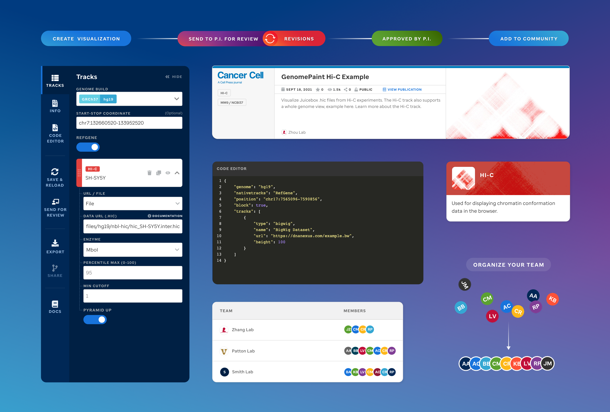
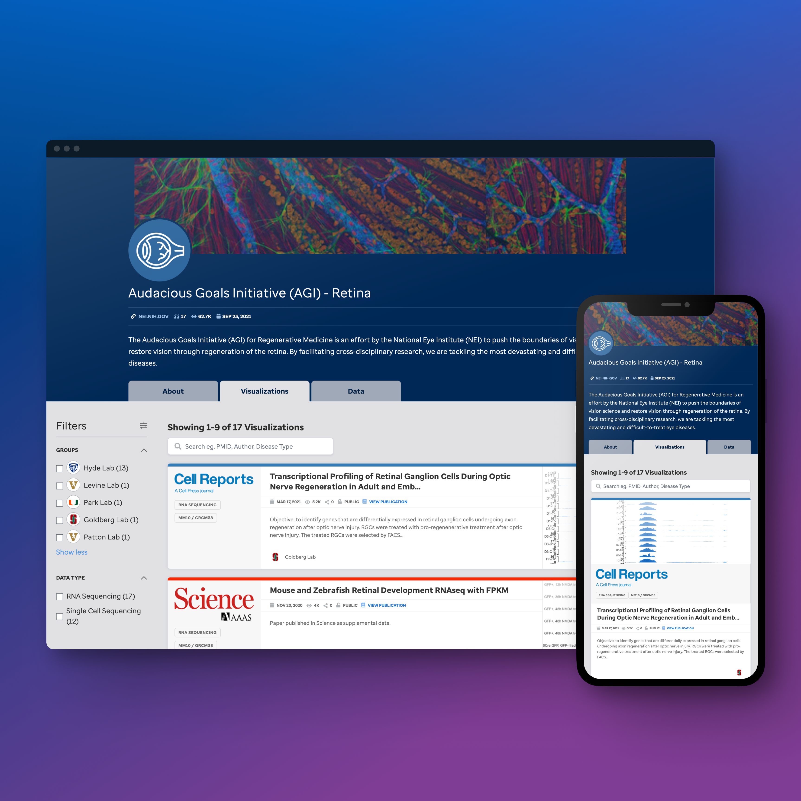

Visualization Community Designing a new way for scientists to see and share genomic discoveries.
Overview
Client
St. Jude Children’s Research Hospital
Role
Lead Product Designer
Website
View Project ↗- UI/UX Design
- Design Systems
- Data Visualization
- Strategic communication
I led design for the Visualization Community, a web platform on St. Jude Cloud that helps scientists explore, publish, and share genomic discoveries in real time. Always with the single mission: Finding cures. Saving children.
The product turned static research figures into living visualizations, giving pediatric oncologists and researchers an easier way to collaborate, analyze, and uncover new insights—without writing code.
Since launch, the platform has become part of daily research at St. Jude and beyond.
What used to take days, now takes minutes. All in support of St. Jude’s mission: finding cures and saving children.
Published visualizations produced across research projects
Visualizations featured in Nature, Cancer Discovery, and peer-reviewed journals
Research teams connected across institutions
Views for the leading publication visualization
Views for the AGI Community piece
Consecutive nominations for the Visualization is Beautiful Award
At St. Jude Children’s Research Hospital, everything comes back to a single mission: Finding cures. Saving children.
The Visualization Community was born from that same drive. It helps scientists turn complex genomic data into interactive stories they can share with each other and the world.
What started as a small gallery of visualizations grew into a living space for collaboration and exploration—connecting labs, ideas, and discoveries across continents.
Researchers at St. Jude work with massive genomic datasets that reveal how childhood cancers begin. Combining the big data and dat visualization tool into something meaningful on the cloud, something others could understand and use quickly, was tedious like the science surrounding it.
Visualizations were often stuck on local computers or flattened into static figures in journals. Once published, they lost their interactivity and context. Updating them took time and often required help from technical teammates.
There had to be a better way to keep science alive and accessible.
A new path forward
St. Jude Cloud, a platform dedicated to sharing data freely, opened the door. The idea was simple: create a home for interactive visualizations that could evolve alongside new discoveries.
I joined the team to help define what that could look like. We wanted to design a product that felt as intuitive as it was powerful—a place where researchers could publish and explore visualizations without needing to code or configure anything.
Contribution #1
Descriptive text

Desc textAlongside the platform, I created a visual identity for the 3D Genome Consortium, a collaboration between St. Jude and The Broad Institute at MIT.
collaboration, discovery.
Researchers move faster.
They can build and update visualizations without waiting for technical help.
Access is reliable.
Data and visualizations now live in one stable, public home.
Insights run deeper.
Scientists can explore datasets in real time instead of relying on static images.
Impact extends further.
Teams around the world can now build on each other’s work.
"Anyone who goes into the visualization applications can look for the underlying data, analyze it, and publish using it if they find something novel. It’s really a resource for the entire academic community."
— Asa Karlstrom, PhD, St. Jude Children’s Research Hospital


This project reminded me that good design in science isn’t only about aesthetics, it’s about access. When we remove barriers, we make discovery easier.
The Visualization Community continues to grow as part of the St. Jude Cloud ecosystem, helping researchers around the world see and share data in new ways. It’s one small part of a larger mission that never stops: finding cures, saving children.